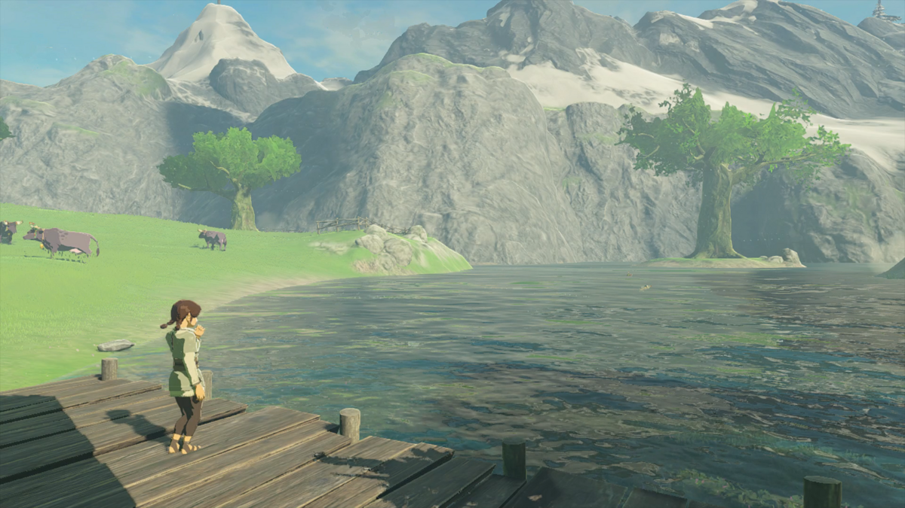

图：哈特诺村牧场湖边——可音就站在木栈道上，漂流瓶在湖心漂着。
先说结论：一只瓶子，一块奶酪
哈特诺村北边山坡上的牧场，湖边木栈道上站着可音。她曾祖父的信装在漂流瓶里掉进湖心了，她不会游泳，够不着。砍附近的树拼个木筏划过去，用究极手把瓶子捞上来交给她，再去她家小屋，她会按信里的食谱做出哈特诺奶酪送你一个；从此拿鲜奶就能找她换奶酪。注意：本任务是村长选举线的一环，得先接了里德的「新招牌料理」才能接。
| 阶段 | 要做的事 |
|---|---|
| 接任务 | 村长选举线进行中，接下里德的「新招牌料理」后，去牧场找可音 |
| 捞瓶子 | 砍树拼木筏划到湖心，用究极手把漂流瓶捞上来 |
| 交瓶子 | 把瓶子放到可音脚边，她读信后请你去她家小屋 |
| 领奶酪 | 去她家小屋交谈，拿到哈特诺奶酪；之后可用鲜奶换奶酪，也可以 20 卢比直接买 |
接取与奖励
| 项目 | 内容 |
|---|---|
| 接取 | 村长选举线进行中：先在服装店触发塞西与里德的争吵、接下「支持塞西还是里德？」，再去里德家接「新招牌料理」（里德让你来牧场找可音要奶酪），然后到牧场找湖边木栈道上的可音交谈 |
| 位置 | 哈特诺村 · 哈特诺牧场，约 3630, -2045, 0175 |
| 奖励 | 哈特诺奶酪 ×1；之后可用鲜奶找可音换奶酪（1 瓶鲜奶换 1 个奶酪），也可以 20 卢比直接买 |
| 后续 | 拿奶酪回去交给里德，完成「新招牌料理」，村长选举线继续推进 |
任务总览
| 顺序 | 步骤 | 要点 |
|---|---|---|
| 1 | 去牧场找可音 | 村北上坡的牧场，湖边木栈道上；须先接「新招牌料理」 |
| 2 | 把漂流瓶捞上来 | 砍树拼木筏划到湖心，究极手抓瓶子；也可接长杆从岸边拖回来 |
| 3 | 把瓶子交给可音 | 瓶子放她脚边，跟她说话，她读信后请你去她家小屋 |
| 4 | 去她家领奶酪 | 小屋里交谈，拿到哈特诺奶酪；留一个给里德 |
第一步：去牧场找可音
哈特诺村往北上坡就是哈特诺牧场（邓茨的牛场），湖边有条木栈道，可音白天就站在栈道上。跟她说话，她说曾祖父的信装在漂流瓶里掉进湖心了，湖太深，她不会游泳，够不着。
图：去哈特诺村的路上会经过哈特诺堡垒遗迹，从双子驿站方向过来就能看到。
第二步：把漂流瓶捞上来
瓶子漂在湖心，站在岸边够不着；游泳过去也拿不了——手里拿着瓶子游不回来。最稳的办法是砍附近的树拼个木筏：用究极手把两三根原木粘在一起推下水，站上去划到瓶子边，用究极手把瓶子抓上来放筏上，再划回岸边。
1砍树拼筏。牧场附近就有树，砍两三棵，用究极手把原木粘成筏，推下水。
2划到瓶子边。站上木筏划到湖心，靠近漂流瓶；怕筏漂走可以贴个风扇胶囊当动力。
3抓瓶子上筏。用究极手抓住瓶子放到筏上，最好顺手把它粘在筏上，免得划回来半路滚进水里。

图：究极手——抓住、移动、粘合，木筏、长杆都这么拼，捞瓶子全靠它。
不想划船也有别的办法：把四五根原木接成长杆，从岸边伸过去粘住瓶子拖回来；或者用冰箭在水面铺一条冰路走过去。哪种顺手用哪种，瓶子捞上来就行。
第三步：把瓶子交给可音
用究极手把瓶子放到可音脚边的栈道上，跟她说话。她打开瓶子读信——信是曾祖父留下的奶酪食谱，字迹潦草得只有家里人认得出来。她看完信很高兴，请你去她家小屋一趟。
第四步：去她家领奶酪
跟她到牧场边的小屋里交谈，她按信里的食谱做出哈特诺奶酪，送你 1 个，任务完成。从此她开了奶酪店：拿 1 瓶鲜奶找她，能换 1 个哈特诺奶酪。鲜奶可以找牧场的邓茨拿，给他 3 个橡子就行。
关键信息表
| 项目 | 内容 |
|---|---|
| 接取人 | 可音：哈特诺村牧场，湖边木栈道上（白天） |
| 漂流瓶 | 牧场湖心漂着；岸边够不着，游泳拿不了，须用木筏、长杆或冰路 |
| 信的内容 | 曾祖父留下的奶酪食谱，字迹潦草，只有家里人认得出来 |
| 奖励 | 哈特诺奶酪 ×1；之后 1 瓶鲜奶换 1 个哈特诺奶酪 |
| 鲜奶来源 | 牧场的邓茨：给他 3 个橡子，换 1 瓶鲜奶 |
| 前置任务 | 村长选举线：支持塞西还是里德？ → 新招牌料理（里德让你来找可音） |
| 后续任务 | 新招牌料理：把哈特诺奶酪交给里德 |
容易翻车的地方
- 没接「新招牌料理」就去找可音——她不会派任务，先去里德家接。
- 游泳去捞瓶子——游过去容易，拿着瓶子游不回来，得用木筏或长杆。
- 瓶子放筏上没固定——划回来半路滚进水里，还得再捞；用究极手把瓶子粘在筏上再划。
- 奶酪全吃光了——留一个给里德，「新招牌料理」要用。
- 在牧场找不到可音——她白天在湖边栈道上，晚上回家了，白天再来。
一句话总结
接了「新招牌料理」后去牧场找可音，砍树拼筏捞起湖心漂流瓶，她按曾祖父的食谱做出哈特诺奶酪——留一个给里德，村长选举线就往前推了一大步。